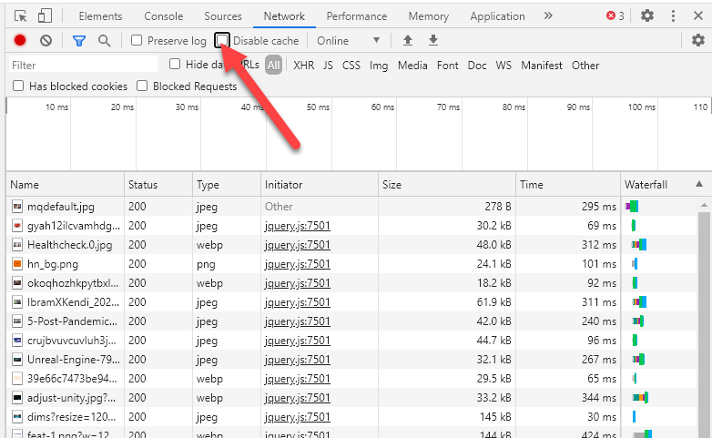

Notaki z kursu WTF
Mikołaj Korzeniowski
HTML
Wszystko o znacznikach html
Elementu typu button używamy do wszystkich interakcji stosowanych na stronie
<button> Click Me! </button>
Znacznika a uzywamy do tworzenia nawigacji na stronie i odnośników
<a href=""> ... </a>
Inputy
< input type="file"> // do wysyłania plików
< input type="submit"> // nie posiada labela
// metoda post -> do wysyłania strony
table
<table>
<caption> rozpiska</caption>
<thead>
<tr>
<th>One</th>
<th>Two</th>
<th>Three</th>
</tr>
</thead>
<tr>
<th> 001 </th>
<th> 002 </th>
<th> 003 </th>
</tr>
<tr>
<th> AAA</th>
<th>BBB</th>
<th>CCC</th>
</tr>
</table>
Wyhcodzi coś takiego:
| One | Two | Three |
|---|---|---|
| 001 | 002 | 003 |
| AAA | BBB | CCC |
CSS & SASS
wszystko co stylach
Background
background-clip: // jak chcemy żeby tło się zaczynało od paddingu albo borderu
background-size: auto // wg rozmiaru obrazka
background-size: contain // zawsze cały obraz
background-size: cover // cała przestrzeń
FLOAT
float: left // to nie służy już do budowania layoutów
clear: both // rozszerza element rodzica do wysokości elementu;
overflow: hidden; // ustawiamy to w box container najczęściej do zdjęcia
Position
position: absolute; ustawiamy ją względem rodziaca o atrybucie relative
position: sticky; to jest fajna opacja - zostaje w jednym miejcu ekranu ale tylko względem jego rodzica
BOX SIZING
box-sizing: border-box; // content + padding border;
box-sizing: content-box; // tylko content
Grid jest bardziej do tworzenia całych layoutów;
Flexbox raczej do centrowania i ustawiania elementów
grid-template-columns: repeat( auto-fit, minmax(250px, 1fr) );
grid-template-columns: 1fr 1fr 1fr // trzy równe kolumny
grid-column-gap: 16px;
row-gap: 16px;
Importowanie innych plików do jednego scss'a
@import 'mixins.scss';
Mixin
// tworzenie mixina
@mixin button{
height: 100px;
width: 200px;
}
// w kodzie
.new-button{
@include button;
}
//zmienne w SASS
$base-color: #fff;
$font-size: 24px;
Mixiny jako funkcje
@mixin borderRadius($radius){
border-radius: $radius;
}
@extend
myButton{
@extend title
}
Pisanie w sasie struktury bemowej
.section{
background: blue;
&__title{
padding: 10px;
&--special{
color: pink;
}
}
}
BEM - Block Element Modyfirer
block__element--modyfirer
Pseudoselektory
div::before // dajemy dwa znaki : -> tak jest poprawniej
div::after //może być urzyty np do jakiegoś ozdobnego elementu przed nagłówkiem;
button:hover -> po najechaniu
button:visited -> po odwiedzeniu
first-child //wykonuje się na elemencie a nie na rodzicu!
selector:not -> wyrażenie logicznie
Media Queries - powinny być na końcu strony
@media screen and (max-width: 768px){
}
JavaScript
To jest sekcja o js
zmienna - wskazuje jakąś wartość. sama w sobie nie jest wartością
zmienna ma undefined jeżeli zmienna jest zdefiniowana ale nie ma przypisanej wartości
Immutability (niezmienność) - zmienne są połączeniem do wartości a nie wartością samą w sobie
const name = "Maciek" // to jest stała i nie możemy jej przypisać innej wartośći
let age = 32 // to jest zmienna i może zostać zmieniona // można używać camelCasa do zapistwania nazw zmiennych
Żeby importować pliki z innych plików javascriptowych trzeba w kodzie dodać 'module'
<script src="main.js" type="module"></script>
Export
export const myFunction = function(){console.log('This is my function')}
Import
import {myFunction} from '/main.js';
Może też być eksport domyślny
Manipulowanie klasami przy pomocy javascriptu
document.querySelector('.section').classList.add('className')
document.querySelector('.section').classList.remove('className')
document.querySelector('.section').contain('className')
querySelector - nie używajmy getELementById albo po className
Logika
if(something != something){
}
// warunke sprawdza czy coś nie jest równe czemuś
let number = 30;
if(30 === number ){ } // === taki znak sprawdza również typeOf
//wartosci folsy:
0, '', null, NaN, undefined
//wartości truthy
[], {},
const resuly = 32 > 20 ? age : false; // zwraca wartość podaną na początku jeżeli true
typeof
let myNumber = 0;
console.log(typeof myNumber) // 'number'
innerHTML - może pokazać jaka jest wartość tej treści
funckcje
return - to zwraca funkcja
nie ma return - funkcja zwraca undefined
DRY - don't repeat yoursefl
arrow function
const greet = () => {
}
// arrow function nie tworzy nowego zakresu This
1. definiujemy funkcję w stałej
2. przypisujemy w nawiasie parametry (lub pusty nawais)
3. wstawiamy znak arrow =>
4. wpisujemy w nawiasy klamrowe blok funkcji
Obiekty
wskazania na zmienne proste można zmieniać
NODE.js
To jest sekcja o node js
Node wykorzystuje silnik przeglądakrki chrome poza przeglądarką
Workflow
- Tworzymy nowy projekt
- Robimy jakieś tam skrytpy w node
- inicjalizujemy npm'a
- w package.JSON wpisujemy skrypty np. node myFile.js
- W konosoli możemy uzywać poleceń do wywoływania naszych sktyptów
npm
npm - jak budować z paczek
npm init -y // inicjalizacja z pustym plikiem JSON
npm install node-sass //instalacja modułu sass
npx node-sass -w main.scss main.css // kod do wywoływania w consoli
npm run sass // to jest po ustawieniu już w konfiguracji
W package.json możemy skonfigutować swój skrypt
"scripts": {
"sass": "npx node-sass -w scss/style.scss style.css",
"test": "echo \"Error: no test specified\" && exit 1"
},
W powyższmy przypadku w pliku style.scss importujemy wszystkie pozostałe style dla strony, a następnie ją kompilujemy do jedngo pliku wynikowego
Ctrl + C - przerywa działanie skryptu w konsoli
npm install <nazwa-paczki> --save // jak ma być podpięty pod projekt
npm install <nazwa-paczki> --save-dev //jak ma być podpięty tylko do pracy przy projecie - wersja developerska
Nie commitujemy katalogu node modules. Wrzucamy do do pliku .gitignore
npx nazwa_paczki // użycie zainstalowanej już paczki
Przydatne pakiety
https://autoprefixer.github.io/
autoprefixer
GIT
trochę o kontroli wersji
.gitignore -> tutaj wpisujemy listę rzeczy, które nie będę śledzeone np. nie śledzimy plików z hasłami notatkami i modułów npm
git branch -a //pokazuje wszystkie branche
Git Workflow
git init //zainicjalizowanie gita lokalnie
git add .
git commit -m "commit message"
git commit . -m "commit message" // w skrucie to co powyżej
git commit -a -m "commit message" // to samo
git status // sprawdzanie aktualnego stanu repozytorium
git push origin --all // wysłanie na serwer wszystkich branchy
Merge
Workflow:
>
git checkout master // przechodzimy na mastera
git merge --no-ff branch_name // w commit message opisujemy co to był za feature
git branch -d branch_name // usuwamy niepotrzebną już gałąź
Po takiej operacji możem z powrotem przejść na gałąź develop a na masterze zostawić ostanią aktywną wersję projektu
head - najnowszy commit na danej gałęzi
HEAD - aktualny comit (ostatni)
git checkout - // idziemy do HEAD
git checkout -b branch_name // tworzenie nowego branchu i checkout na niegoik
CherryPick
git cherry-pick tagname
TAGI
Tagi są nieruchome i trzymają sie commita
annotated tag:
git tag //wypisuje wszyskie Tagi
git tag -d tag_name //kasuje tag
git tag v1.2.2 // dodanie do aktualnego commitu tagu v1.2.2
git tag tag_name -a -m "description" // dodanie tagu z opisem
Fast forward merge wykona się jeżeli na gałęzi doceleowej nie dokonano git commit od czasu utworzenia gałęzi źródłowej
Dobra praktyka - branch per feature
tip - to ostatni commit w danej gałęzi
git show master^^ // pokazuje 2 commity przed masterem
git log --oneline // wypisuje wszystko oneline
VISUAL STUDIO
Przydaten rzeczy
Tworzenie podstwowej struktury html poprzez podanie znaku ! i zatwierdzeniu enterem
Ctrl + Shift + P -> format document
Przydatne wtyczki:
- Live server
Google Chrome - developers tools
Przydaten rzeczy z konsoli
w zakładce network można znaleść pliki, zdjęcia, filmy to co się łąduje na stronę. Można tu też znaleść błędy np. 404 że pliku nie znaleziono
Można zachaczć zakłądkę disable catche co pozwala na załadowanie stronę od nowa bez ciasteczek
Tworzenie podstwowej struktury html poprzez podanie znaku ! i zatwierdzeniu enterem
Ctrl + Shift + P -> format document
Przydatne wtyczki:
- Live server
Wolne myśli
Tutaj luźne pojęcia i myśli wyciągnięte z kurs
debugging - usuwanie błędów
zapis pliku, sprawdzenie czy edytujemy dobry plik, odświerzeie przeglądarki
Nie zawsze trzeba robić skomplikowaną strukturę projektu. Czasem wystarczy live sever w przeglądarce i podgląd na sass
Żeby odpalić edytor możemy wejść do wybranego katalogu; wpisać w ścieżce cmd a następnie wpisać code .
code .
Gatsby.js -> budowanie stron starycznych. Nie wymaga połączenia z bazą danych
Nie uczyc się wszystkiego na pamięć, wystarczy jak wiemy że coś takiego jest
Typescript
overreacted - blog o javascript i reactcie
Hello Roman - kurs recta
Heroku
CSS design awards
nitify cms
firebase
backend do zarządzania z bazą danych
Przeciągnięcie folderu do command lina powoduje pobranie jego ścieżki
Pojedyńczy <br> jest spoko
Można urzyć grida do animacji jakiejś przestrzeni
górne menu z przeźroczystym gradientem - > zasłania już elementy nachodzące na niego
Pytania
czy npx służy do wywoływania już zainstalowanych paczek?
Czy można podpiąć swoją stornę na innym hostingu pod git'a?